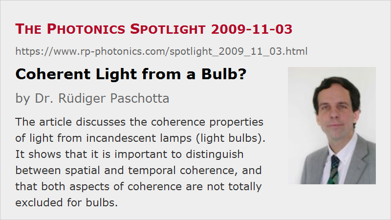

Coherent Light from a Bulb?
Posted on 2009-11-03 as a part of the Photonics Spotlight (available as e-mail newsletter!)
Permanent link: https://www.rp-photonics.com/spotlight_2009_11_03.html
Author: Dr. Rüdiger Paschotta, RP Photonics Consulting GmbH
Abstract: The article discusses the coherence properties of light from incandescent lamps (light bulbs). It shows that it is important to distinguish between spatial and temporal coherence, and that both aspects of coherence are not totally excluded for bulbs.

Ref.: encyclopedia articles on coherence; F. Kusonoki et al., “Narrow-band thermal radiation with low directivity by resonant modes inside tungsten microcavities”, Jpn. J. Appl. Phys. Part 1, 43 (8), 5253 (2004)
We have often read that laser light is coherent, light from a bulb is incoherent, therefore you can well focus laser light but not light from a bulb. The matter deserves some more thoughts, however.
Why actually is light from a bulb (incandescent lamp) incoherent? Does that property apply to any thermally generated light? This is actually a bad question, since one should make clear whether we talk about temporal or spatial coherence. Let us look at both aspects.
Temporal Coherence
The temporal coherence of light is intimately related to its optical bandwidth. Typically, thermal radiation is very broadband. If it is blackbody radiation, its spectrum is described by Planck's formula. At least for solid-state devices, one always expects a broadband spectrum, so there seems to be no way that a bulb could generate light with a high temporal coherence.
However, it is physically possible that even a solid-state surface exhibits strongly wavelength-dependent absorption and emission characteristics, so that the spectral shape of thermal radiation exhibits significant peaks and thus deviates strongly from a Planck-type shape. As an example, some Japanese researchers (see the above reference, Kusonoki et al.) have investigated microstructured tungsten surfaces (with a periodic array of microcavities), the emission of which exhibits strong peaks with a bandwidth well below 1 μm. Although this is still far from reaching the temporal coherence of a laser, it demonstrates that at least substantial increases of temporal coherence are possible for thermally generated light.
Spatial Coherence
The poor spatial coherence of light from a bulb has relatively little to do with the process (thermal emission) which generates that light. The actual point is the large emitting surface. If one could reduce the emitting area to the order of a micron squared, the resulting spatial coherence would surpass that of various lasers. There are only two difficulties with a strategy of reducing the emitting area:
- It is technical difficult to obtain a very small and very hot body, which is electrically connected while avoiding that the heat quickly escapes via these connections. This consideration suggests the use of some contactless heating method, i.e., a departure from the principle of a simple bulb.
- Even if one could achieve a small emitting area, this would imply a low emitted power. Using the Stefan-Boltzmann law for blackbody radiation, assuming an emitting area of 1 μm2 and a temperature of 3000 K (typical for an incandescent lamp), we would obtain a radiated power of only 4.6 μW. Higher temperatures would help a lot, as the power scales with the fourth power of the temperature, but there are obviously severe limits to that strategy.
At least in one dimension, the filament of a bulb may be fairly small. If the filament diameter is 0.1 mm and the filament is kept precisely straight, the beam quality of the emitted light at least in the direction perpendicular to the filament axis is roughly comparable with that of the slow axis direction of a high-power diode bar. Of course, in the other direction the beam quality is extremely poor, whereas the diode bar exhibits a fairly high beam quality in the fast axis direction.
How can laser light be spatially coherent even if the emitting area is large? This results from the laser process, which kind of coordinates the emission over the whole beam area. The laser resonator defines a set of resonator modes, and stimulated emission means that excited laser-active atoms or ions are forced to emit exactly into one mode or at least some limited number of modes.
This article is a posting of the Photonics Spotlight, authored by Dr. Rüdiger Paschotta. You may link to this page and cite it, because its location is permanent. See also the RP Photonics Encyclopedia.
Note that you can also receive the articles in the form of a newsletter or with an RSS feed.
Questions and Comments from Users
Here you can submit questions and comments. As far as they get accepted by the author, they will appear above this paragraph together with the author’s answer. The author will decide on acceptance based on certain criteria. Essentially, the issue must be of sufficiently broad interest.
Please do not enter personal data here; we would otherwise delete it soon. (See also our privacy declaration.) If you wish to receive personal feedback or consultancy from the author, please contact him e.g. via e-mail.
By submitting the information, you give your consent to the potential publication of your inputs on our website according to our rules. (If you later retract your consent, we will delete those inputs.) As your inputs are first reviewed by the author, they may be published with some delay.
|  |
If you like this page, please share the link with your friends and colleagues, e.g. via social media:
These sharing buttons are implemented in a privacy-friendly way!